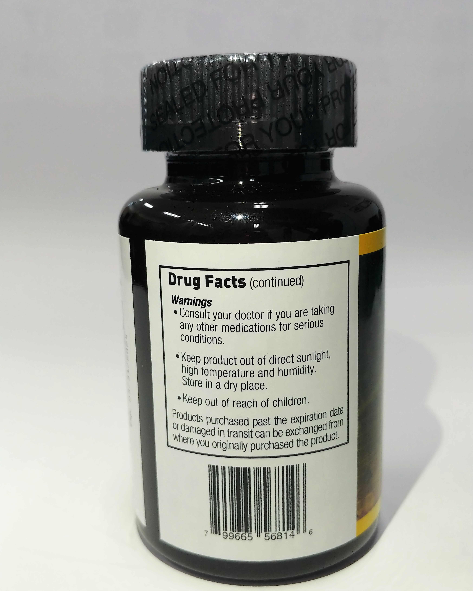

Mirapharm 22(미라팜 22), 암치료효과 , 면역조절제, 건선 아토피 치료 효과 치매 치료효과, 갑상선치료 효과
● 제품 명 : MIRAPHARM 22
● 포장단위 : ① 90capsules (일반인의 예방 및 치료용)
● 섭취용량 : 일반 인 - 1일 1회, 1회에 3capsules을 물과 함께 섭취 초기 암 – 1일 1회, 1회에 5capsules을 물과 함께 섭취
● 제품의 주 성분 : PANAX QUINQUEFOLIUS, Scales, Calamus, Rachis


HTML